Héroes

| 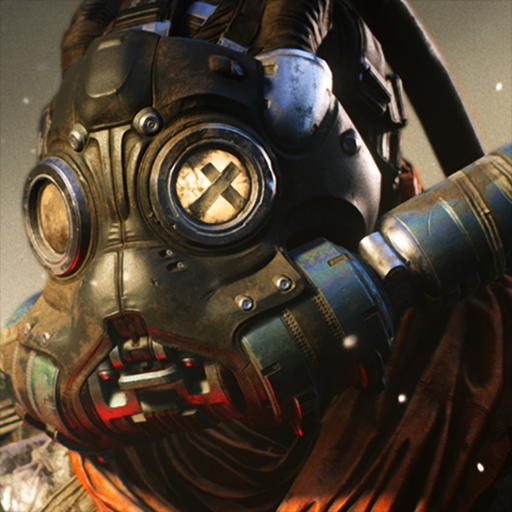 Drongo |
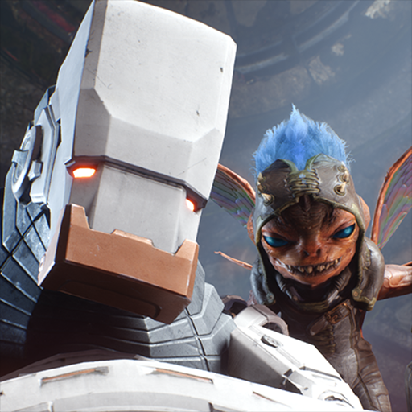 GRIM.exe |
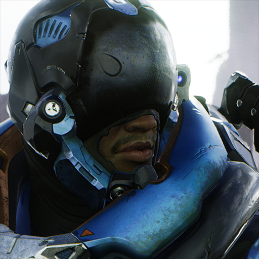 Murdock |
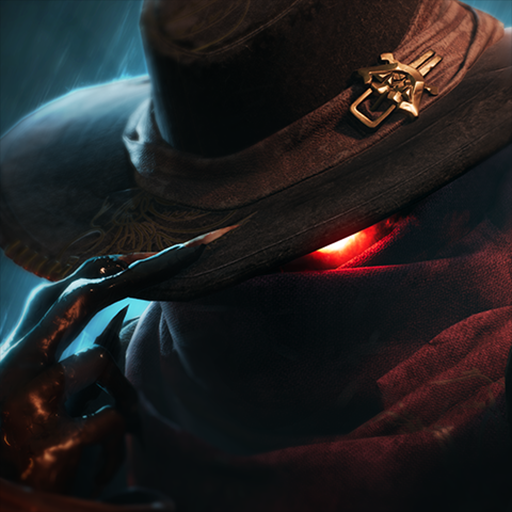 Revenant |
| 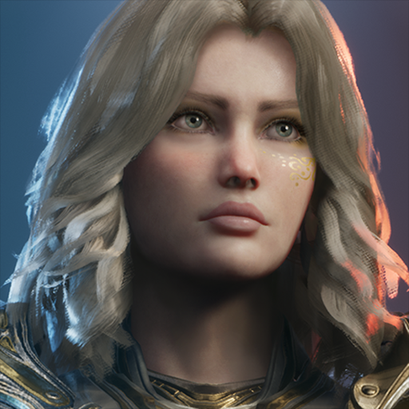 Serath |
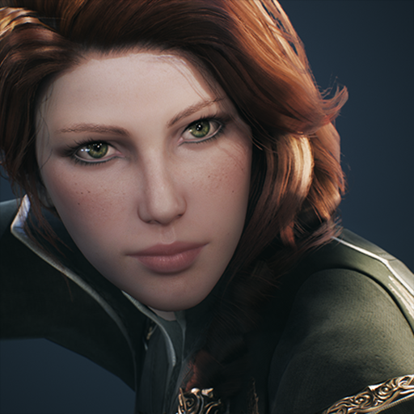 Sparrow |
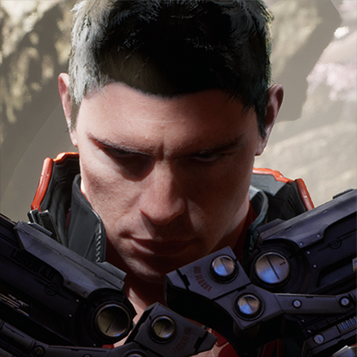 TwinBlast |
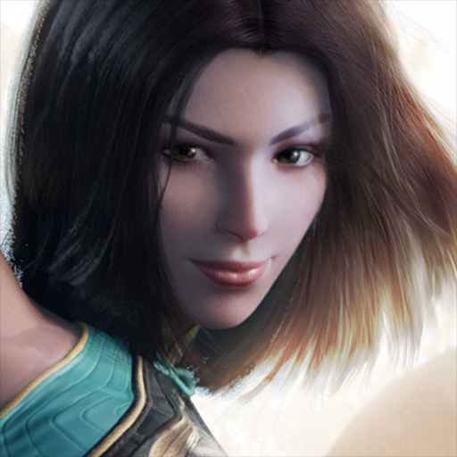 Yin |
| 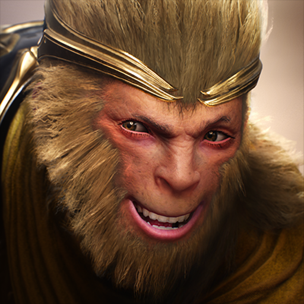 Wukong |
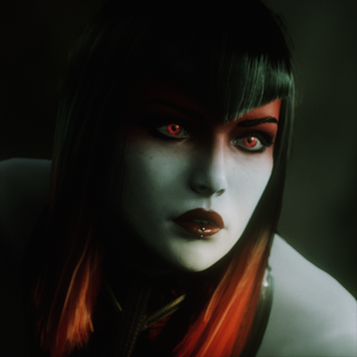 Countess |
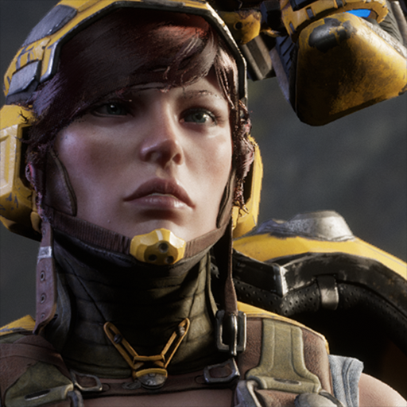 Gadget |
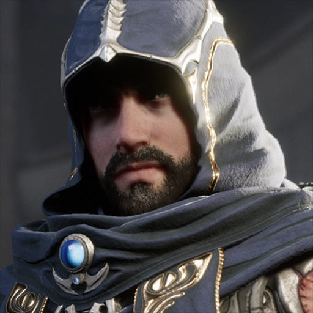 Gideon |
| 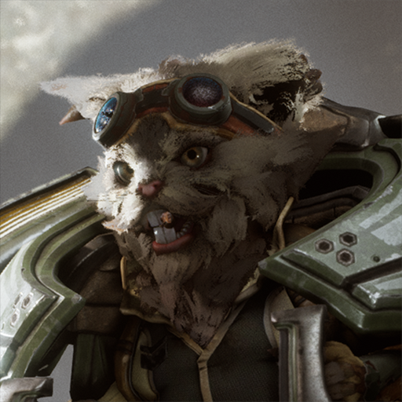 Howitzer |
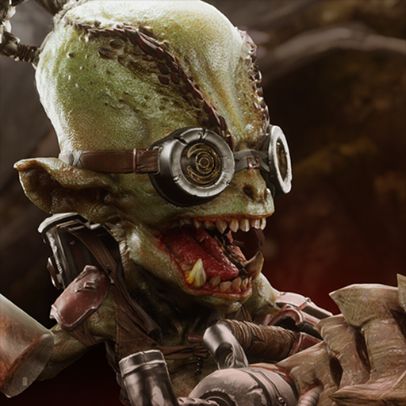 Iggy & Scorch |
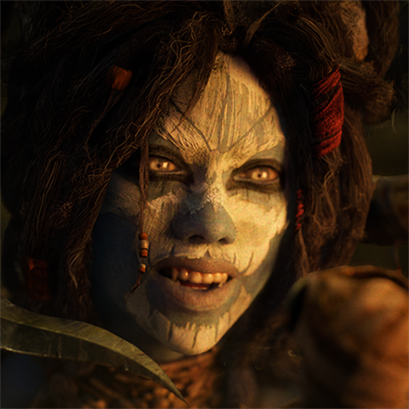 Morigesh |
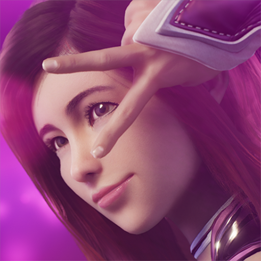 Shinbi |
Drongo
Drongo, the master of the scrapyard, has a tool for every situation. Though living in the chem wastes of Omeda has affected his mind, it has only made him more fearless and given him a keen sense for blowing things up
FECHA DE LANZAMIENTO: |
29 AGOSTO, 2017 |
ATAQUE POR SEGUNDO: |
1.18 |
VELOCIDAD DE MOVIMIENTO: |
660 |
DEFENSA BÁSICA: |
12.9 |
VOLVER A TODOS LOS HÉROES |
GRIM.exe
GRIM.exe is a Ranger built to control the battlefield and neutralize enemies. His array of abilities reward precision play and allow him to lock down and destroy high-value targets. When playing GRIM.exe, you decide when it's time to fight. Use your abilities to dismantle enemy engagements, slow down targets and displace enemy damage dealers. Once you spot your victim, use "G.T.F.O" to vaporize your target.
FECHA DE LANZAMIENTO: |
10 JUNIO, 2017 |
ATAQUE POR SEGUNDO: |
1 |
VELOCIDAD DE MOVIMIENTO: |
430 |
DEFENSA BÁSICA: |
18.7 |
VOLVER A TODOS LOS HÉROES |
Murdock
Murdock is a Ranger who relies on his basic attacks to deal high single target damage. Murdock's abilities offer different types of utility and allow him to lane safely. Use your Ultimate to pick off low-health targets, push enemies back or even support allies in a teamfight. Late game, approach fights carefully, analyze the threat and eliminate the enemy. Plan your attacks to get the upper hand on your enemy.
FECHA DE LANZAMIENTO: |
26 MAYO, 2016 |
ATAQUE POR SEGUNDO: |
1.55 |
VELOCIDAD DE MOVIMIENTO: |
570 |
DEFENSA BÁSICA: |
6.7 |
VOLVER A TODOS LOS HÉROES |
Revenant
Revenant is an unholy melding of a malevolent spirit, and a vicious bounty hunter. An ability carry, Revenant relies on isolating targets and collecting bounties in order to snowball past the enemy Carry. Revenant relies on Reckoning to collect bounties and come online sooner than other carries. Building pure power will make your abilities deal more damage, allowing you to nuke down high-value targets. When engaging enemies, always be mindful of your cooldowns and how many rounds you have in the chamber, even one small miscalculation could cost you your bounty.
FECHA DE LANZAMIENTO: |
2 SEPTIEMBRE, 2016 |
ATAQUE POR SEGUNDO: |
1.1 |
VELOCIDAD DE MOVIMIENTO: |
300 |
DEFENSA BÁSICA: |
3.7 |
VOLVER A TODOS LOS HÉROES |
Serath
Serath is a melee carry that trades out the safety of being able to attack from range for increased damage and mobility. Serath hides an inner darkness, but has trained to balance her two natures, hoping to one day claim justice for her fallen comrades. Serath can dish out large amounts of damage on her enemies, but she must be within melee range to do so. To maximize your damage, skirt the edges of teamfights and deal damage safely. Your job is to deal damage, not chase down and kill the first enemy you see. Utilize your abilities to remain elusive in fights, mobility is the key to your success. Channel your inner darkness and find balance to overcome your enemies.
FECHA DE LANZAMIENTO: |
2 SEPTIEMBRE, 2016 |
ATAQUE POR SEGUNDO: |
1.3 |
VELOCIDAD DE MOVIMIENTO: |
600 |
DEFENSA BÁSICA: |
10.7 |
VOLVER A TODOS LOS HÉROES |
Sparrow
Sparrow is a low mobility Ranger capable of becoming a high damage carry late game. Sparrow depends on her teammates for protection, while she devastates enemies with her attacks. Sparrow has no escape abilities so positioning is key. Don't push too far forward without backup. In teamfights stay behind your tanks and focus down targets from afar.
FECHA DE LANZAMIENTO: |
1 SEPTIEMBRE, 2017 |
ATAQUE POR SEGUNDO: |
1.9 |
VELOCIDAD DE MOVIMIENTO: |
650 |
DEFENSA BÁSICA: |
3.7 |
VOLVER A TODOS LOS HÉROES |
TwinBlast
TwinBlast is a dual-wielding gunslinger, built to be self-reliant and evasive. Using his abilities, TwinBlast can create opportunities to output high amounts of burst damage. When playing TwinBlast, look for opportunities to quickly burst down targets. Rapid fire can give you the upper hand when engaging an enemy, taking a chunk of their health before the enemy knows what hit them. Rocket Dash will allow you to reposition during team fights, but consider saving it for the perfect moment. It can easily get you out of bad situations, or allow you to close the gap to finish off an enemy.
FECHA DE LANZAMIENTO: |
8 SEPTIEMBRE, 2017 |
ATAQUE POR SEGUNDO: |
1.9 |
VELOCIDAD DE MOVIMIENTO: |
700 |
DEFENSA BÁSICA: |
3.7 |
VOLVER A TODOS LOS HÉROES |
Yin
Yin is a melee carry who uses her whip and powerful wind magic to dispatch her enemies. Though she and Aurora came from a life of crime, Yin rose to the rank of first guardian of her crit. When approaching a fight, focus in on your enemies and use your abilities to control the fight. When playing Yin, timing is everything. Using an ability too soon or too late can end in your death. Remain focused and manipulate the wind to overtake your enemies.
FECHA DE LANZAMIENTO: |
2 SEPTIEMBRE, 2016 |
ATAQUE POR SEGUNDO: |
1.9 |
VELOCIDAD DE MOVIMIENTO: |
700 |
DEFENSA BÁSICA: |
3.7 |
VOLVER A TODOS LOS HÉROES |
Wukong
Wukong and Feng Mao used to be travelling companions. When Sun Wukong became too annoying, Feng trapped him in a cave and left. 100 years later, Sun Wukong is free and on his way to Agora to resume annoying Feng Mao. Wukong is a deadly and elusive melee carry, capable of farming faster than any other hero.
FECHA DE LANZAMIENTO: |
2 SEPTIEMBRE, 2016 |
ATAQUE POR SEGUNDO: |
1.9 |
VELOCIDAD DE MOVIMIENTO: |
700 |
DEFENSA BÁSICA: |
3.7 |
VOLVER A TODOS LOS HÉROES |